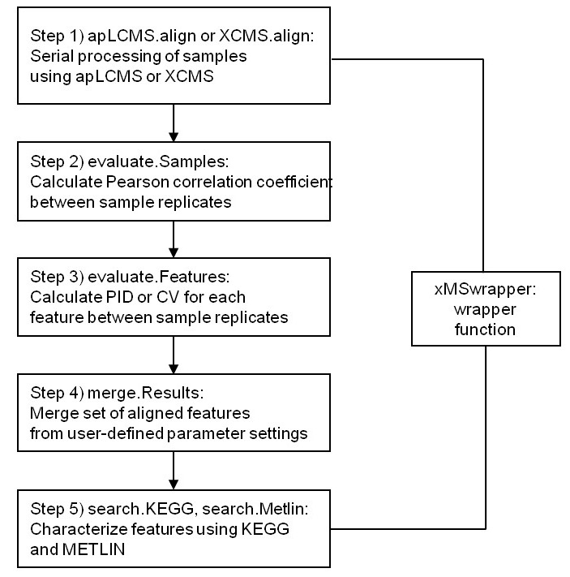
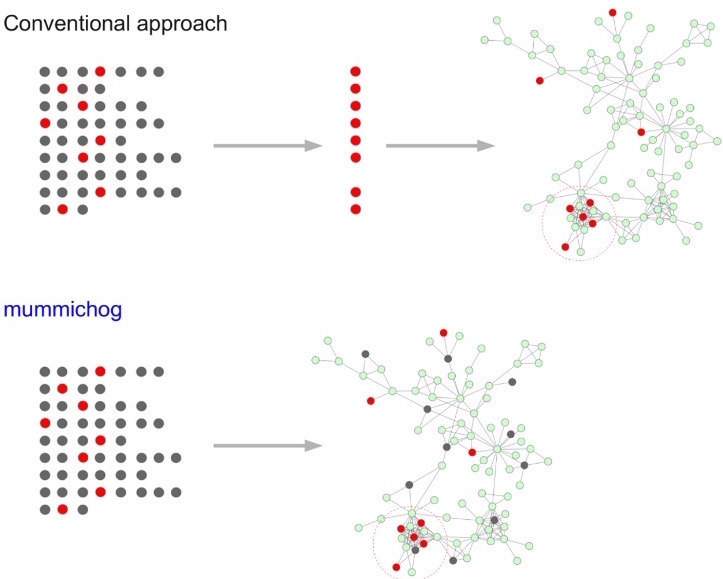

The tools listed here have been developed by: Clinical Metabolomics.
apLCMS, LC-MS metabolomics feature extraction
The apLCMS is used for preprocessing LC-MS data. The major improvements include the following aspects: the adaptive tolerance level searching, to apply non-parametric methods of fine-tune intensity grouping, to better preserve weak signals and the estimation method on peak intensities for absolute quantification. The algorithms are implemented in an R package apLCMS.
More about the tool: Yu, T., Park, Y., Johnson, J. M., and Jones, D. P. (2009). apLCMS—adaptive processing of high-resolution LC/MS data. Bioinformatics, 25(15), 1930-1936.
xMSanalyzer
xMSanalyzer is an automated pipeline for processing of metabolomics data which integrates with packages apLCMS and XCMS, but it could be also used to improve the data extraction steps performed by other software. It includes the following functions: data extraction, quality control assessment, detection of overlapping and unique metabolites in multiple datasets as well as batch annotation of metabolites.
Fig 1. xMSanalyzer workflow (Taken from Uppal et al. 2013)
More about the tool: Uppal, K., Soltow, Q. A., Strobel, F. H., Pittard, W. S., Gernert, K. M., Yu, T., &emp Jones, D. P. (2013). xMSanalyzer: automated pipeline for improved feature detection and downstream analysis of large-scale, non-targeted metabolomics data. BMC bioinformatics, 14(1), 15.
Mummichog
Mummichog is a method to post-process high-throughput metabolomics data, namely, metabolite identification . This software features a biological activity prediction method which is directly from mass spectrometry data without priori identification of metabolites. Both gene expression and metabolite identification confirmed the predicted results.
Fig 2. Workflow comparison between conventional methods VS Mummichog (Taken from Li et al. 2013)
More about the tool: Li, S., Park, Y., Duraisingham, S., Strobel, F. H., Khan, N., Soltow, Q. A., ... &emp Pulendran, B. (2013). Predicting network activity from high throughput metabolomics. PLoS computational biology, 9(7), e1003123.